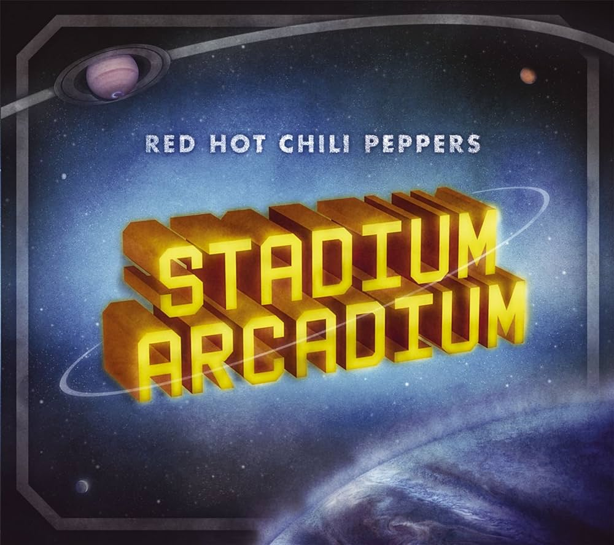
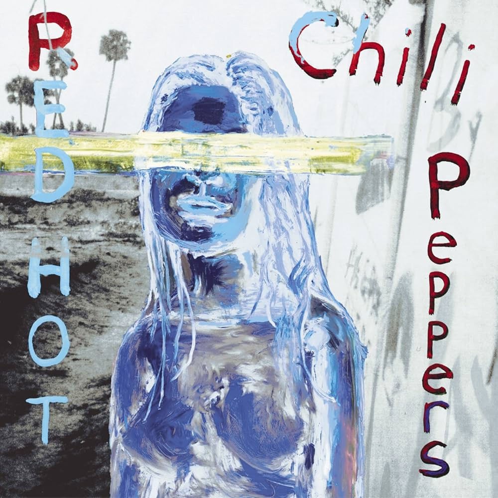
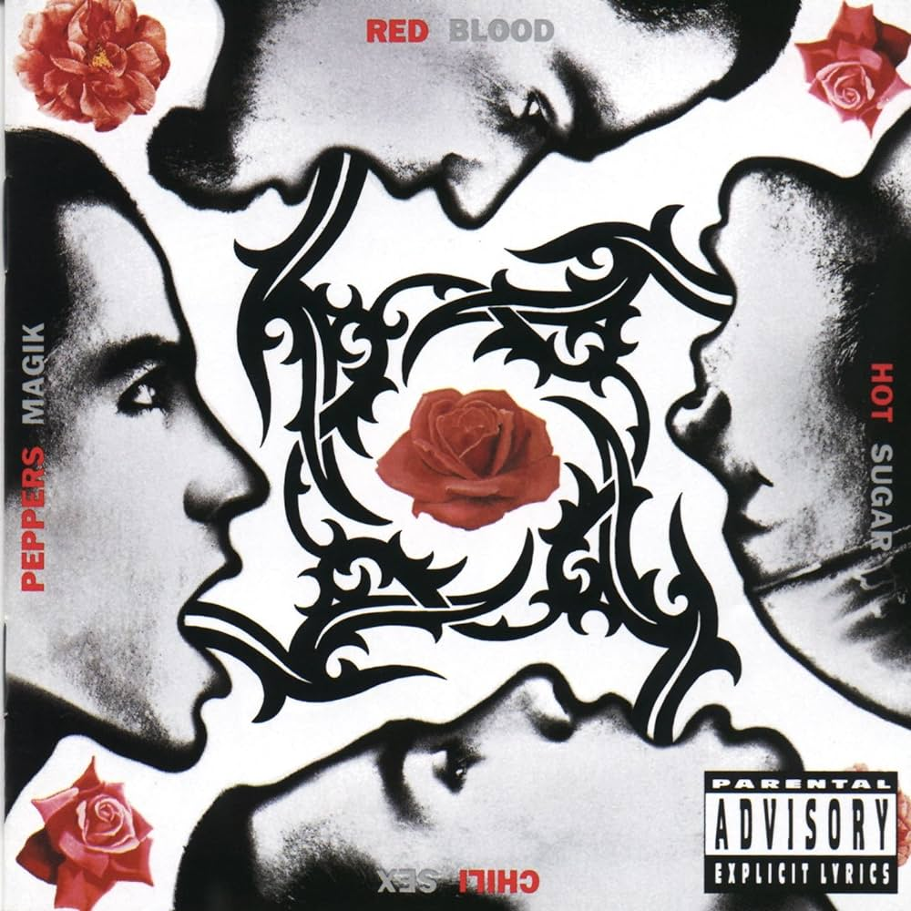

Red Hot Chili Peppers
Band Website
Band Members
- Anthony Kiedis: Vocals
- John Frusciante: Guitar,Backing Vocals
- Flea: Bass
- Chad Smith: Drums
Favorite Albums
Stadium Arcadium. Released on May 9, 2006, Stadium Arcadium is the 9th studio album. The album is a personal favorite of mine with favorite tracks from the album being Wet Sand, Hey, and Torture Me. What I like most about this album is the instrumentals and how well they play off each other. Each track has different styles that call back to their previous albums, some songs show influence from older albums while still having a distinct sound. As a bass player myself this is what draws me to this band and specifically this album.

By The Way. Released on July 9 2002, By The Way is the 8th studio album. Favorite tracks on this album include Can't Stop, Throw Away Your Television, Don't Forget Me, and Minor Thing. For a few years in a row I would go up to visit my uncle in Chicago with other my other uncle and we would listen to this album a lot on the drive up. This album also was what inspired me to start playing bass, specifically the song Can't Stop with the slap and pop bassline. For these reasons I consider this album one of my all time favorites.

Blood Sugar Sex Magik. Released on September 24th 1991, the 5th studio album. Favorite tracks on this album include My Lovely Man, If You Have To Ask, Funky Monks, and Apache Rose Peacock. The album is what I consider to be the bridge between the old style of the band into the more modern sound they have today.
